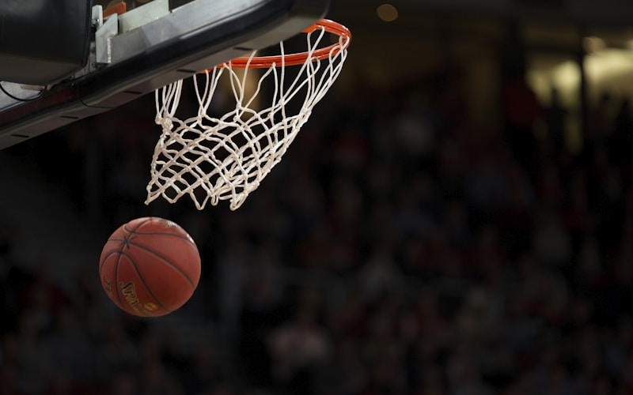

🏀 NBA Memes Gallery
This has been pushed via CICD 🔁

Crying Jordan
The most iconic NBA meme of all time. Michael Jordan's tearful Hall of Fame induction speech became the ultimate way to mock any sports loss or failure. From blown leads to bad trades, Crying Jordan fits everything.
Legendary
Classic

LeGM / LeBron's Hairline
LeBron's many nicknames spawned endless memes. "LeGM" for his team-building influence, "LeBron" for anything he does, and the eternal debate about his receding-then-recovering hairline. The King of meme versatility.
King
Versatile

Nick Young Confused
Swaggy P's confused face with question marks floating around him. Perfect for when something in the NBA makes absolutely no sense - bad calls, weird trades, or insane stat lines.
Confused
Relatable

Steve Kerr Clipboard
The Warriors coach looking at his clipboard with various captions. Originally "you're a hot little slut" but adapted for countless NBA scenarios. The ultimate coaching meme template.
Coaching
Hilarious

Warriors Blew a 3-1 Lead
The 2016 Finals will never be forgotten. The 73-win Warriors blowing a 3-1 lead to LeBron and the Cavs became the ultimate comeback story and the ultimate roast. Never gets old.
Historic
Savage

Harden Defense Memes
James Harden standing still on defense, getting crossed, or completely lost. The Beard may be an offensive wizard, but his defensive lowlights created comedy gold for years.
Defense
Roasted

Kobe "Soft" / Mamba Mentality
Kobe calling someone soft or any meme about Mamba Mentality. The Black Mamba's competitive fire and famous GIFs of him talking trash are perfect for motivational or roasting purposes.
Mamba
Competitive

JR Smith Game 1 Blunder
JR Smith grabbing the rebound and dribbling out the clock in Game 1 of the 2018 Finals, not knowing the score. LeBron's reaction face became instant meme gold. Peak confusion moment.
Facepalm
Epic Fail

Ben Simmons Won't Shoot
Ben Simmons passing up wide-open dunks or refusing to shoot threes. His afraid-to-shoot persona created endless memes, especially after the 2021 Hawks series. The ultimate confidence crisis.
Shooting
Notorious

Kawhi's Laugh
Kawhi Leonard's robotic, awkward laugh that sounds like "Ha ha ha ha ha" in the most monotone way possible. Used whenever something is funny but you have no emotions about it. Board man gets memes.
Robot
Awkward

Westbrook's Outfits
Russell Westbrook's wild pregame fashion choices. From bizarre patterns to questionable accessories, Russ became the king of "what is he wearing?" memes. Fashion icon or fashion victim? You decide.
Fashion
Wild

"And I Took That Personally"
MJ from The Last Dance saying he took something personally, then proceeded to destroy opponents. Used for any petty motivation or overreaction. The GOAT of holding grudges and making memes about it.
GOAT
Petty